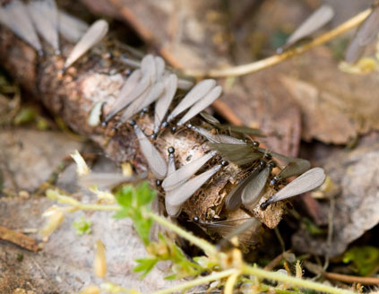

If you have Drywood Termites, the first thing you will notice is sawdust/sand fecal pellets. You'll also start noticing damage. Sometimes you might actually see the termites as they swarm out at the end of the summer season. Although you will notice these termites predominately in the summer window the termites are eating your home all year long, 24 hours a day. Just because you don't see them does not mean they are not there. This is why an experienced and trusting termite inspector should be called. We will take a look at your home free of charge. Captain Termite Control provides traditional fumigation methods as well as alternative spot treatments.
Drywood Termites are airborne. They will fly in, swarming in from a neighbor's house, from vegetation around the exterior of your home or property line fences.
Yes, they likely will come back. Make it our responsibility to make sure you will never have to worry about termites again. Ask your inspector about a full structure minimal warranty.

Winged termites are swarming wood eaters usually seen during the spring months. They get their name by living in the soil in colonies. They travel from their colonies in the soil to their food source (homes, scrap wood, cardboard, etc). Whether your home is raised or on a slab foundation they will find a way in.
If your structure is raised these termites will enter the home easily through mud shelter tubes traveling as far and as long as necessary to get to their food source. Therefore, we suggest that you have your sub area inspected periodically.
If you are on a slab foundation these termites find their way up from the soil through cracks in the foundation, around plumbing, cement expansion joints, and other areas that give them access to your structure. They are attracted to moisture and wood/cellulose debris. Subterranean colonies can be eradicated by a soil treatment.
Captain Termite Control INC. is a family owned and operated company providing effective and preventative termite treatments in Los Angeles, California. Our mission is to provide the highest level of service at affordable prices. Whether it's your home or business we can protect your investment by ridding your property of unwanted termites.
Sign up for our newsletter. We'll keep you informed of our sales promotions